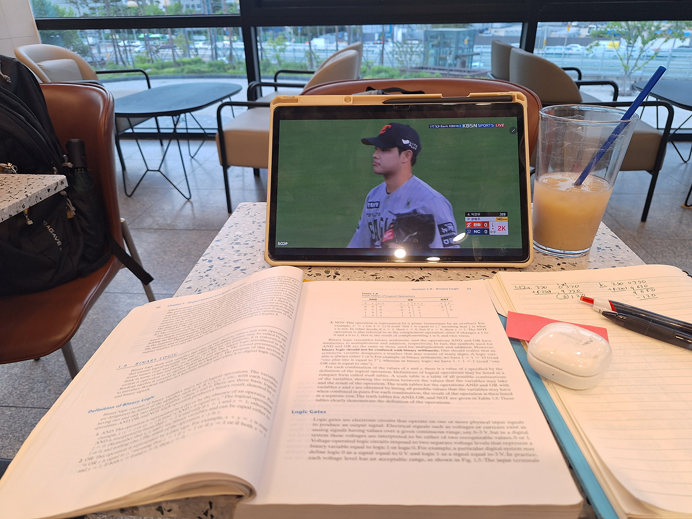
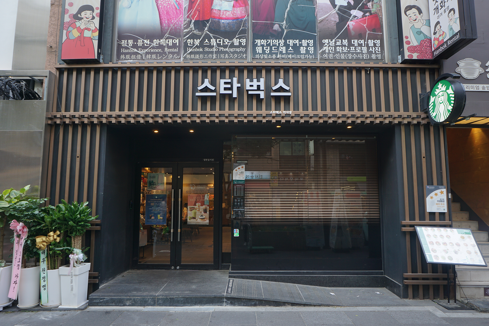
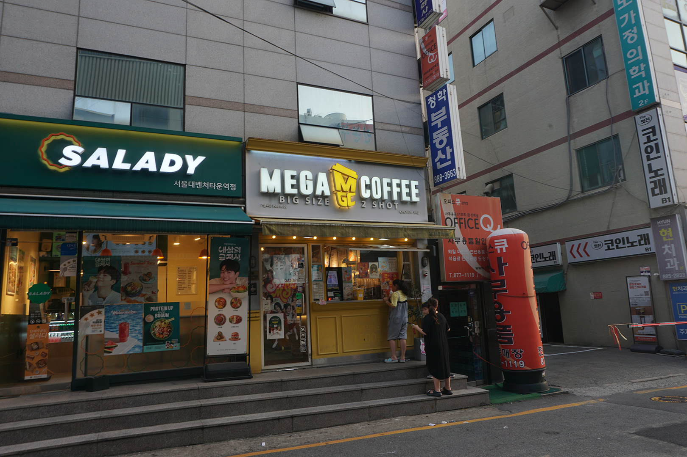
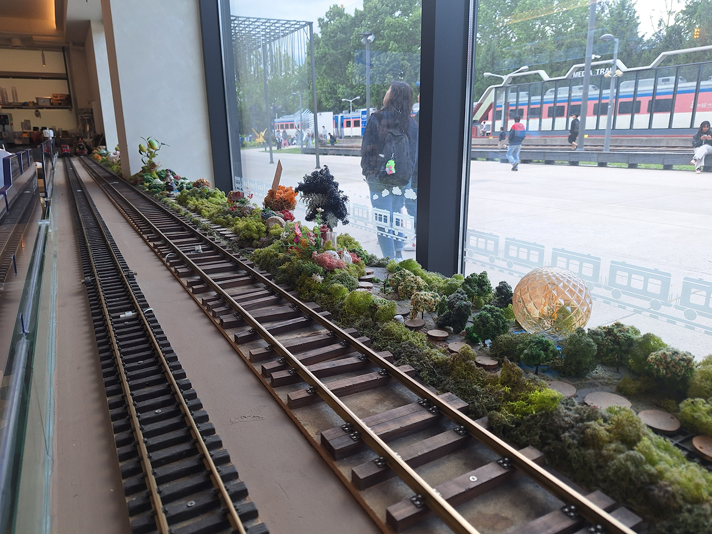
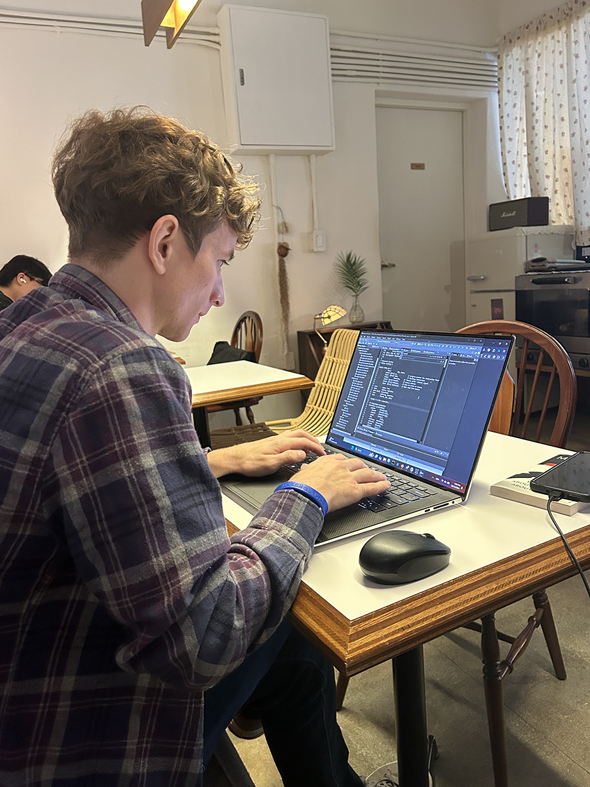
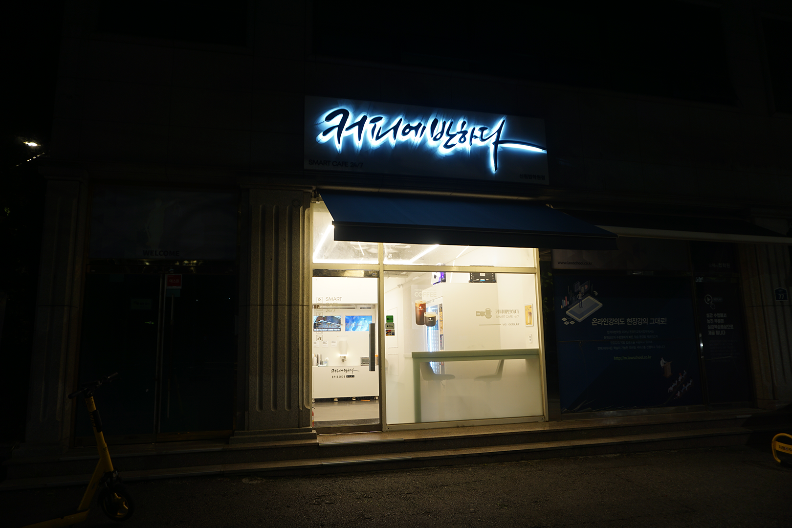

An Endless Line of Cafes
Any first-time visitor to Korea will be struck by the absolutely insane amount of cafes and coffee shops. Between the chains and the private operations, they are EVERYWHERE. On any given block there are probably five different coffee shops, even within the same building! It seems like you can’t walk more than 10 seconds without running into another coffee shop. They are absolutely endless.
The reactions I see from other foreigners ranges from enthusiasm to disdain. Those that enjoy them love the convenient places to stop, rest, and talk for a while. They also love exploring the different types of cafes with their different interiors or themes.
While those that dislike them complain that the coffee is bad or it’s ridiculous that so many exist at all. For the case of people that dislike the coffee, I have to say to them… Grow up. Quit being elitist. Let people enjoy what they want to enjoy. Find the places you like with the coffee you like…
For the other criticism about the sheer amount being ridiculous with some speculating about why Koreans act like this with criticism that generalizes Koreans in a way bordering on character assassination, I have to say you probably haven’t considered the reasons why properly. You may not even be able to understand it well unless you have truly lived here for a while.
Why So Many Cafes?

Cafes in Korea are used in a variety of ways here. They serve people different purposes at different times.
The biggest purpose I would say is as a meeting place to talk and chat with friends, acquaintances, colleagues, etc. Other than restaurants, which you might not want to stay at for very long, there aren’t many other places to just stay and chill. Particularly in those cold, winter or hot, humid months, you need somewhere to go as a respite from the weather.
Especially in the case of friends, this reason rings true. Compared to back home in the US, I would say it is EXTREMELY rare to go to a friend’s house, especially for younger people and students that are living alone or with their parents.
In the nearly 9 years I have been here (Wow. It’s hard to believe it’s been that long…), I can probably count on one hand the amount of times I have been to a friend’s house. And even when I did, it was usually not for that long.
I suspect it has to do with the smaller housing sizes and it being less comfortable being so close to your neighbors and worse soundproofing in certain types of housing. If you want to meet a group of people, it can be even more inconvenient to try to meet at someone’s house.I don’t know quite as much about families, but in my limited experience it does seem somewhat more common to go each other’s house.
Cafes are also very popular among students. They can serve as a decent place to go and study for a while. Especially for those commuting students that don’t want to go all the way home between classes.
I MYSELF really enjoy using cafes as a place to study or browse on my computer. Sometimes I just need a chance of pace and scenery in order to focus better or relax. Trying to do everything at home feels too tedious and it’s easier to get distracted. I’m also someone who enjoys the liveliness of being around other people, even if I’m not directly interacting with them.
And some people just like exploring cafes and going to new places. I will get more into the specifics of that when I go into more detail about the types of cafes there are.
With such a massive amount of cafes, many cafes look to distinguish themselves from others in different ways. Let’s take a dive into the different types of cafes you can find while exploring Korea.
The Chains

First off, there are of course the chains. For you Starbucks lovers, you will have no difficulty finding one in Korea. They even seem to be taking over among Korean branded shops. And for you Canadians, Tim Horton’s has recently taken a stab at the Korean market, though there aren’t many of them.
Among homegrown Korean brands, there are many chains including: Ediya, Angel-in-Us, Coffee Bean, Twosome Place, Compose Coffee (which funnily enough actually has a COMPASS on the logo. Not sure if this was a translation error or something. An exchange student friend pointed this out to me and now I can’t unsee it whenever I walk by one), and many more.
These offer pretty standard coffee shops that are located virtually everywhere. Basic interiors and tables. I’m no coffee snob or anything, but their coffee seems pretty standard and nothing special. A decent place to go to if you need to or just want the comfort of the expected. The main benefit I would say for these places is that they often have a sort of reward program where if you have their individualized app, you can use it every time you order to get rewards or a free coffee every 10 visits or something like that.
The Walk Up Shops

Next, and also a type of chain are the walk up coffee shops. Now, these don’t really fit the article and theme of what I have laid out in the opening paragraphs of places to spend time in, but I still think they deserve mention, because they are coffee and a quick option in case you want them.
These are basically stalls of takeout only coffee. They are tiny, little hole-in-the-wall shops where only the workers go inside and you quickly order a coffee and leave. No seating.
These seem to have become a popular option in recent years, ESPECIALLY around universities or business centers. They are EXTREMELY cheap and service is quick, so people like them when they are low on time, but want a coffee. An example of one of these is Mammoth Coffee.
Local Coffee Shops

Next up is the private coffee shops. These are your local coffee shops. My personal favorite to be honest.
They don’t have the polished and simple looks of the chains. So, they feel more homely and cozy. A place to actually enjoy and spend time in.
The quality and prices WIDELY vary, so it’s hard for me to give an accurate representation of them. But this leaves them open to be very explorable.
If you have lots of time here, I would just recommend going to a bunch of different random ones to find the ones you like. There is such a wide variety and it can be so interesting to see what you can find. In any random corner of the city.
And if you visit often, you may even get to know the owners a little bit, which can be quite fun. For example, during university, I found one close to my home that I really liked the vibe of, so I went there often to study. Honestly, I have that coffee shop to thank for me graduating university. Thanks coffee shop lady!
Themed Coffee Shops

Another popular option, especially among Koreans, is themed cafes. These are cafes with interiors designed around some theme or even selling items related to that theme. This could be any range of things from cats and dogs to Hello Kitty cafes or anime-related cafes.
With the massive popularity in Korea around posting on social media and trying to capture cool aesthetics, many cafes are also just designed around Instagram-like aesthetics to attract people that like to take pictures to post on social media.
I have heard various things about the quality of their food and coffee, so if this is important to you, maybe you should do some research beforehand about the ones you are interested in going to. But the ones that sell themed-items can be cool, because they sell cute or cool items, such as dog-shaped or character-shaped cakes.
Study Cafes

For you students out there, there has been a big boom in study cafes. These are cafes specifically catered to students so they are often around universities or even high schools (if you know about the brutality of Korean high schools and college entrance exams here, you will know what I’m talking about…). In these cafes, you MUST be quiet, so don’t go here if you want to talk with friends.
Unlike the name, however they aren’t really cafes, per say, though they may sell coffee, drinks, or other food items. How it works here, is that you pay for a seat/booth by the hour or even day. If you are looking into studying here regularly, you can even pay for a monthly subscription or a package of a set number of hours, such as 50 hours.
One of the biggest benefits of these places is that they are open 24/7, allowing you to study late into the night or starting from the early morning (especially when most traditional cafes open around 8 or 9am). Many of them also have small conference rooms that you can rent if you are looking to have a meeting with a group of people, like your teammates for a group project.
Workerless Cafes

The final type of cafe I will talk about is one that has really grown in the past couple years. These are the workerless cafes.
Similar to study cafes, I have noticed that these have really popped up around universities. Due to being workerless, they are able to be open 24/7, which can be a real benefit for night owls, such as myself.
In these cafes, there are simple coffee machines to buy your coffee and simple tables. They are very boringly decorated and feel very unwelcoming to be honest, so I have never gone in one. The tables are usually really small and crammed in too, which makes it seem like an uncomfortable place to spend any time in at all.
I have noticed that the prices are really cheap though, so combined with the 24/7 opening, I could understand it as a place to go if you are really in a pinch or desperate or just needed to leave your house.
Conclusion
As you can see, the café culture is quite expansive here. With such a wide range of options to choose from, suiting various needs, you are sure to find what you want at any time of the day.
I hope this information has proven useful and enlightening as to why such a massive amount of cafés exist here.
So, I encourage you to get out and explore! Especially for those of you that decide to live here, find your local café that can serve as a nice escape to get out of the house. I already found mine.